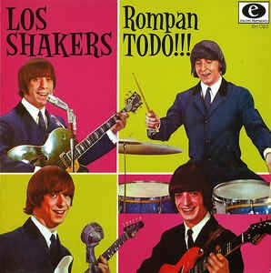
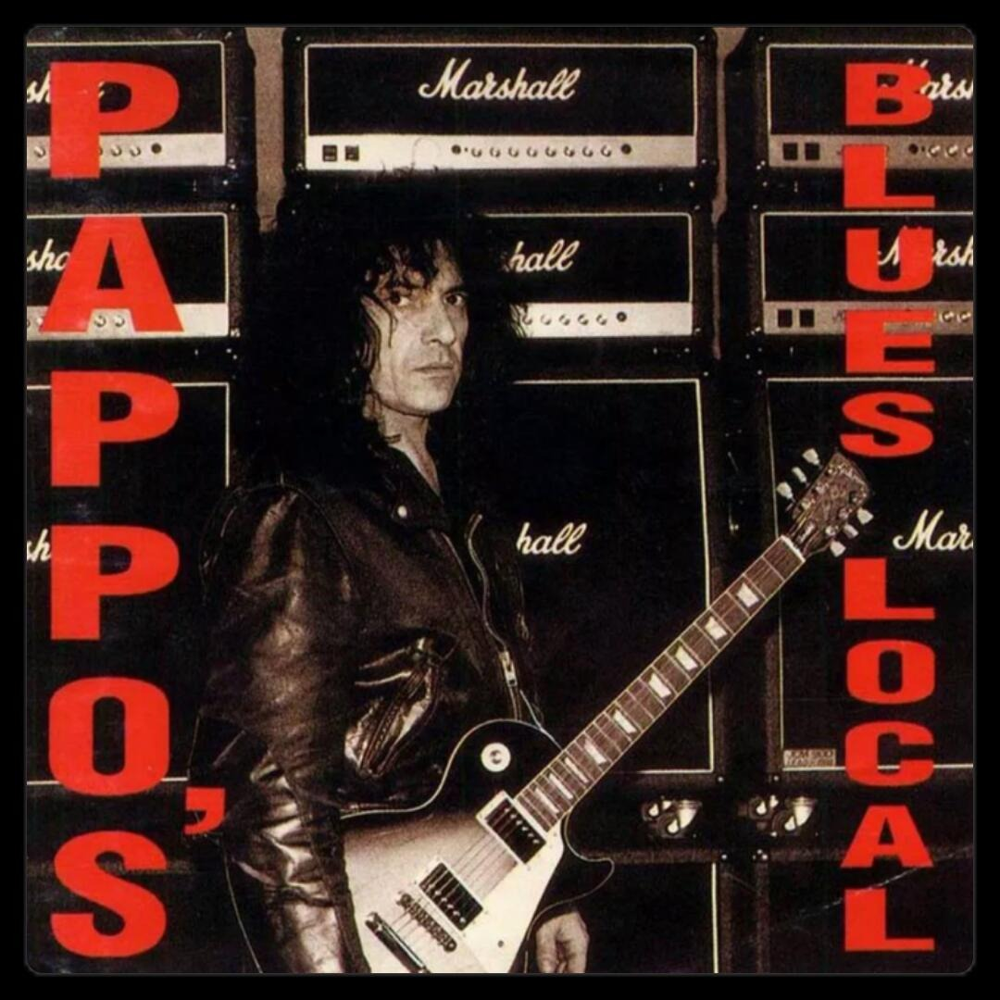
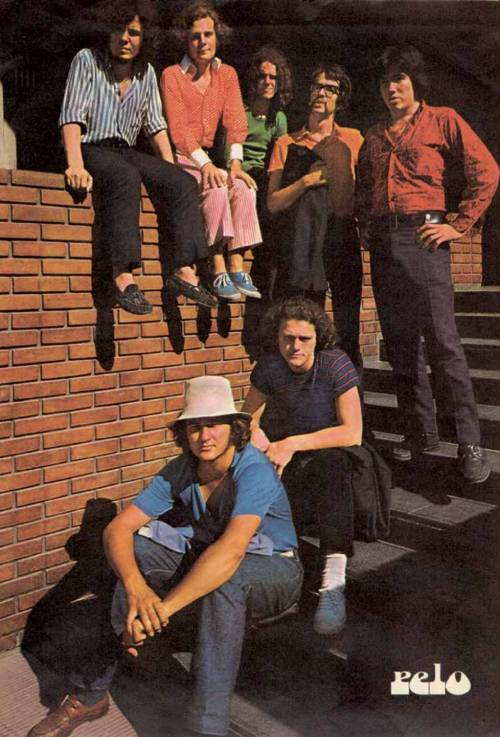
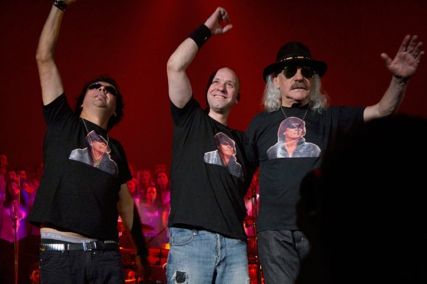
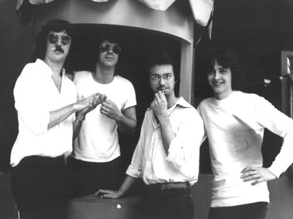

Origen del Rock Argentino
El rock nacional argentino se originó alrededor de 1956, influenciado por el rock and roll de Estados Unidos y The Beatles. Aunque se estableció en los años 60, se consolidó entre mediados de los 60 y mediados de los 70.
El rock argentino comenzó a desarrollarse en medio de turbulencias políticas y conflictos, incluyendo la dictadura conocida como el "Proceso de Reorganización Nacional" que ocurrió entre 1976 y 1983.
En ese período tumultuoso, las letras de las canciones de las bandas y cantantes de rock nacional reflejaron sus sentimientos sobre la sociedad y los conflictos vividos.
La influencia extranjera en la música duró poco debido a la prohibición gubernamental de canciones en inglés, lo que impulsó el desarrollo del rock y la música en español. Los cantantes argentinos de rock incorporaron ritmos originales de Argentina en sus sonidos, dando así un carácter distintivo al rock nacional argentino, que se destaca por su papel durante la dictadura militar de 1976.
- INFO1
- INFO1
- INFO1
- INFO1
- INFO1
- INFO1
- INFO1
- INFO1
- INFO1
Cronología del rock argentino
El comienzo de la historia del rock argentino se vio impulsado en gran medida por bandas uruguayas como Los Iracundos, Los Mockers y Los Shakers, que cruzaron fácilmente el Río de la Plata y generaron interés en Argentina. A partir de ese momento, en Argentina comenzó a desarrollarse el movimiento del rock, influenciado tanto por bandas cercanas a la región como por figuras internacionales como Elvis Presley, The Beatles y The Rolling Stones, entre otros.
El inicio de la historia del rock argentino
«Cuando la gente me dice, ‘Fuiste uno de los primeros en cantar en español’, pienso, ¿en qué otro idioma se suponía que debíamos cantar? (…) Fue esta idea de la década de 1960 en la que no tienes que conformarte con la sociedad, puedes vivir como quieras».
El hard rock y rock progresivo
Después de la disolución de Manal y Almendra en 1971, surgieron nuevas bandas en Argentina como Pescado Rabioso liderada por Spinetta y Pappo's Blues de Norberto Napolitano, que se destacaron en el blues rock y el hard rock, respectivamente, en la escena nacional.
El tiempo de Soda Stereo y el Nuevo Rock Argentino

En los años 80, el rock argentino vivió una expansión y diversificación musical significativa. Destacaron bandas como Soda Stereo, Los Redonditos de Ricota, Virus, Riff, Los Abuelos de la Nada y Los Twist. Soda Stereo, liderado por Gustavo Cerati, se convirtió en un referente a nivel nacional e internacional, estableciendo a Cerati como uno de los principales vocalistas y solistas del rock argentino.
Bandas del rock nacional argentino
En esta sección enlistamos a las bandas de rock nacional de los 60, 70 y 80 que le dieron un significado a qué es el rock nacional con sus sonidos particulares y la forma en la que ejecutaron los instrumentos del rock nacional argentino.
Almendra
Entre la variedad de estilos de rock nacional, en la historia del rock argentino está Almendra, una banda de rock psicodélico que se fundó en 1967 por Luis Alberto Spinetta, Edelmiro Molinari, Carlos Emilio Del Guercio y Rodolfo García. En 1969, estos cantantes de rock nacional de los 70 lanzaron un primer álbum homónimo y, seguidamente, en 1970 salió el álbum Almendra II, el cual tuvo sus hits como Muchacha Ojos de Papel y Plegaria para un niño dormido. El grupo se separó en 1970.
Vox Dei
Conocida como “La Leyenda de Quilmes”, la banda Vox Dei formó parte de los inicios del rock argentino de los 70, desde 1967 a 1981, pero desde 1986 a hasta la actualidad, se han encargado de mantener vivo rock and roll argentino de sus momentos. Vox Dei, conformada por Ricardo Soulé, Willy Quiroga, Rubén Basoalto y Carlos Godoy, hizo historia con La Biblia en 1971. Ese proyecto obtuvo popularidad y reconocimiento debido a la forma en la que el grupo relató el texto santo en canciones como Génesis, Moisés, Profecías y Libros Sapienciales.
Pappo’s Blues
Seguidamente, Pappo’s Blues (1970-2000) también forma parte de la línea de tiempo del rock nacional argentino, ya que fue una banda de rock/blues que empezó a ser gran referente de la música de la década del 70 en Argentina. La banda estuvo liderada por Norberto «Pappo» Napolitano, y sufrió varios cambios en sus años de actividad.
En 1971, Pappo’s Blues grabó su primer álbum homónimo, mientras que un año después (y los siguientes) los proyectos empezaron a titularse Pappo’s Blues Volumen 2, Pappo’s Blues Volumen 3, y así sucesivamente hasta llegar a Pappos Blues Volumen 8: Caso Cerrado, el cual fue lanzado en 1995.
Serú Girán
El rock argentino de los 80 también gozó de los sonidos de Serú Girán (1978-1993), que fue una superbanda de rock nacional argentino, fundada por Charly García, Pedro Aznar y Óscar Moro. Esta icónica agrupación destacó en la movida del rock argentino de los 70 y 80 por sus canciones llenas de poesía y composiciones sofisticadas e innovadoras. De hecho, los llamaban “Los Beatles criollos”, por ser un grupo, por la influencia musical y por el éxito que estaban cosechando. Sus álbumes más conocidos son: Serú Girán (1978), La grasa de las capitales (1979) y No llores por mí, Argentina (1982).
Redonditos de Ricota
Otro de los grupos y cantantes de rock argentinos de los 80 son los Redonditos de Ricota, también conocidos bajo el nombre de Patricio Rey y Sus Redonditos de Ricota (1976-2000), quienes han sido reconocidos por su música y performance en el escenario. En 1982, lanzó su hit Súper Lógico, que resonó en varias emisoras argentinas y se metió en muchas listas de éxitos del momento.
Dos años después, la banda era considerada como un referente de la música del rock nacional y luego lanzó Oktubre, un álbum del cual salió el hit Semen-Up. Varios éxitos del grupo incluyen La Mosca y la Sopa (1986), Lobo Suelto, Cordero atado (1993) y Momo Sampler (2000).
Soda Stereo
Ahora bien, el caso de Soda Stereo como bandas de los 90 en Argentina es especial porque su éxito impactó tanto a nivel comercial como cultural; de hecho, fue una de las bandas argentinas más vendidas de todos los tiempos gracias singles como Persiana Americana, y su gira de 1986, Signos.
Soda Stereo, liderada por Gustavo Cerati, fue una de las primeras bandas que trascendieron de su tierra a las fronteras de América Latina, al tiempo que amasaron millones de seguidores en toda la región. Asimismo, fue uno de los grupos argentinos de rock que más acumuló premios y reconocimientos por su destacada performance; canciones como De Música Ligera, En la Ciudad de la Furia, Ella Usó Mi Cabeza Como un Revólver y Juegos de Seducción, fueron una de las canciones que quedaron presentes en la historia del rock argentino.
Cantantes del rock argentino
Tanguito
Todo no se compra, todo no se vende. Tengo una lista interminable de cosas más importantes que la seguridad. Declaración de principios de Tanguito (Fernán Mirás) en Tango feroz (Marcelo Piñeyro, 1993).
Pappo
"Yo brindo para que la música en vivo, tocada por seres humanos, triunfe". “Cuando pienso que algo es injusto y me siento un poco solo, el blues me sale mejor”. “Acá los metaleros se disfrazan, después cambia la moda y se van a la moda que viene. O sea, la moda está de moda porque es moda.

Charly García
"No existe sombra, no existe culpa, no existe cruz. No voy a esperar las caras que yo extraño. No voy a esperar que el destino hable por mí". "En ese gran mañana veo gente de estatura conmigo.

Luis Alberto Spinetta
“La voz puede decir una sola nota a la vez, pero la cabeza es polifónica”. “No soy de esos músicos que viven para estar tocando su instrumento todos los días. Lo que sí, mi música está influida por mi experiencia de vida, eso es innegable.

Fito Páez
“Lo importante no es llegar, lo importante es el camino; yo no busco la verdad, sólo sé que hay un destino.”

Gustavo Cerati
“No solo no hubiéramos sido nada sin ustedes sino con toda la gente que estuvo a nuestro alrededor, desde el comienzo. Algunos siguen hasta hoy. ¡Gracias... totales!”. Con estas palabras, Gustavo Cerati daba por terminado el último concierto que ofreció Soda Stereo el 20 de septiembre de 1997 en el estadio de River Plate en Argentina.